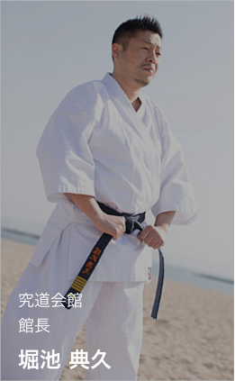
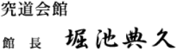
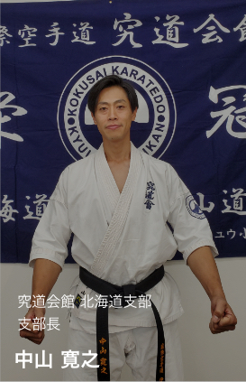
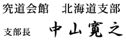

ホーム ＞ 挨拶

私の「空手」という武道との出会いから早いもので30年という歳月が経とうとしております。その間、良き師、良き先輩方、生徒達に恵まれ、また多くの方々のお陰を持ちまして2007年５月13日に神戸元町に「究道会館 HORIIKE GYM」という空手 教室および格闘技フィットネス「武道っ子くらぶ」の拠点となるジムをオープンさせ て頂く事ができました。皆様方には心より 感謝しております。今後共、空手道を通じて得させて頂いたものを微力ながら社会に還元させて頂けたらと願っています。
さて21世紀の今、世界で戦争や不況、凶悪犯罪の激化が深刻な社会問題となって時代はますます混迷の度を極めていると思っております。この不安な時代だからこそ私は真の「武道教育」によって人々を健全な道に導く重要性を認識するのです。
従来の格闘技やジムの「怖い」「厳しい」というイメージを取り除いて老若男女問わず誰もが気軽に足を運べるフィットネスに格闘技の要素を取り入れた格闘技フィットネスをいうものを通じて現代の多くの人に武道を認識して欲しいと思います。
真の武道教育とは、無意味な争いを事を抑止し、人にやさしく接する心を養うことに他なりません。他人が悪い事をしているのを見た時に「悪い事は悪い！」といえる正義感や、自分が悪いことをしてしまった時に「すいません」と謝る事のできる素直な心。それらは厳しい稽古やトレーニングによってどんな人間でもそのように変えていくのだと思います。
また、そういった人間相互の信頼関係を育む事ができるのが武道の素晴らしさです。武道教育とは、師弟の関係だけに止まらず、親と子、先輩と後輩、上司と部下、または友達同士などすべての人間関係について当てはまるとても有意義なものです。そう考えると私ちの社会的役割は大きいと痛感せざる終えません。
また当ジムでは、初心者の方から格闘技経験者であるけれども「ブランクが長い」「怪我が怖い」「体力が心配」等、色々な悩みをお持ちの方にも心
配なくトレーニングして頂ける様、スタッフ一同、努力しておりますので、 お気軽にお越しください。
最後になりましたが、これからの我々の活動にさらなるご理解を頂いて、ご指導、ご鞭撻賜りますよう宜しくお願い申し上げます。
敬具


この度は、究道会館北海道支部のホームページへお越し頂き誠にありがとうございます。
当道場は現在、札幌を中心に宮の沢道場・前田教室・新川・石狩花川教室の4か所で活動しております。
究道会館北海道支部がこうして活動させていただけるのも、道場生並びに父兄様、そして当道場に関わるすべての方々のおかげです。
誠にありがとうございます。
究道空手は、武道においての強さを追求 することはもちろんですが、空手を通じ「礼儀」「礼節」を重んじ正しい人間形成
の向上を根本としております。空手を学ぶことにより心身を鍛え、自分に負けない強い精神、・他人を受け入れる事の出来る広い心を身
につけて頂ければと考えております。また、空手は「こわい」「いたい」などのイメージがあるかもしれませんが、当道場では個人のレベルにあった指導を心がけております。
空手の試合に強くなるだけが空手道ではありません。それぞれが目標を持ち、自分に合った空手道を追求し、それに向かって努力できる環境をつくっていきたいと思っております。
敬具
